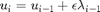
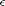
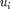
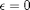
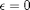

FileName = quadratic_fit
Contents
Description
After calculating conjugate gradient, the new controls, . The  is the step size we move in the direction of conjugate gradient. This is a constant value in original GRAPE paper by N Khaneja, but, we make it dynamic. In order to do that we calculate the controls,  for the next step for three different values of , which are  . The fidelity using controls obtained from 3 different values of is calculated. Note that we do not calculate the fidelity again for , since they corresponds to old controls. The 3 values of fidelity obtained as a function of is fitted with a quadratic fit (x axis is ). The for which fidelity is maximum is choosed to vary the controls. Note if the value for which fidelity is maximum is zero, we chose it's value to be 0.1, otherwise the loop will be an never changing infinite.
. The fidelity using controls obtained from 3 different values of is calculated. Note that we do not calculate the fidelity again for , since they corresponds to old controls. The 3 values of fidelity obtained as a function of is fitted with a quadratic fit (x axis is ). The for which fidelity is maximum is choosed to vary the controls. Note if the value for which fidelity is maximum is zero, we chose it's value to be 0.1, otherwise the loop will be an never changing infinite.
function multi_fac = quadratic_fit(y) h=1; A=[1/(2*h^2) -(1/h)^2 1/(2*h^2); -(1/h) (1/h) 0; 1 0 0]; A=A*y'; a=A(1); b=A(2); multi=[0 1 2]; if (a>0 || a==0) [~, idx] = max(y); [x_max] = ind2sub(size(y),idx); multi_fac = multi(x_max); else multi_fac = -b/(2*a); end multi_fac=min(max(0.1,multi_fac),2);